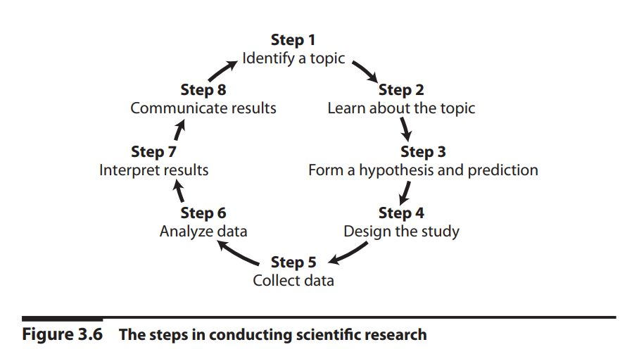
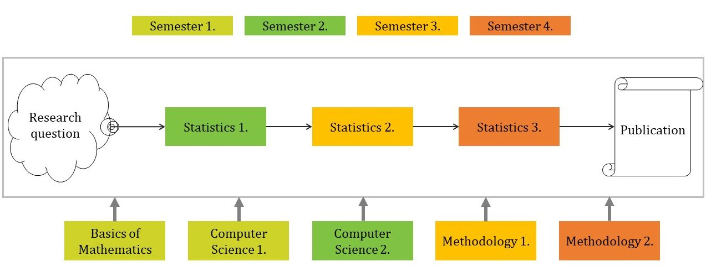

2 Course details
2.1 Intro
- Readings:
- Navarro & Foxcroft (2022, pp. 3–12)


2.2 Files, directories, compressing
- Readings:
- University of Helsinki (2023) 1.1 Computer functionality
- University of Helsinki (2023) 1.2. Using files and programs
- Problems
- Questions
- What is the purpose of buying a computer?
- What problems does the computer solve?
- How does a computer solve problems?
- What is the file?
- What is the purpose of the file?
- What is the directory
- What is the purpose of the directory?
- What is the structure of directories?
- What is packing and unpacking (or compressing and extraction)?
- What is the purpose of the packing?
- Skills
- creating, renaming, coping, moving, deleting files and directories
- compressing and extracting files and directories
- creating file with special type (TXT, DOCX, XLSX, ODT, ODS, PDF, PPTX, PNG, JPG, OMV, BIB, etc.)
- typing special characters (ampersand, angle brackets, apostrophe, asterisk, at sign, backslash, braces, brackets, caret, dollar sign, em dash, en dash, hyphen, backtic, tilde, parentheses, percent, pipe, slash, underscore, etc.)
2.3 RStudio reporting
- Readings:
- RStudio for the Total Beginner (only the first minute and a half)
- Posit Cheatsheets: RStudio IDE
- The Markdown Guide: Getting Started, Markdown Cheat Sheet, Basic Syntax, Extended Syntax
- Posit Cheatsheets: Publish and Share with Quarto
- Tutorial: Hello, Quarto
- Problems
2.4 JabRef - Bibliography management
- Readings:
- Problems
2.5 TXT, CSV, Spreadsheets
- Readings:
- What is Tabular Data?
- University of Helsinki (2023) P.3 Spreadsheets
- Problems
2.6 Jamovi - Introduction
- Readings:
- Navarro & Foxcroft (2022, pp. 43–49)
- Poulson (2019)
- Welcome
- Installing jamovi
- Navigating jamovi
- Problems
2.7 Jamovi - Import data, Data conversion
- Readings:
- Navarro & Foxcroft (2022, pp. 49–54)
- Poulson (2019)
- Sample data
- jamovi modules
- Entering data
- Importing data
- Variable types & labels
- Problems
2.8 Jamovi - Data transformation
- Readings:
- Navarro & Foxcroft (2022, pp. 97–117)
- Poulson (2019)
- Wrangling data: chapter overview
- Computing means
- Computing z-scores
- Transforming scores to categories
- Filtering cases
- Problems
2.9 Jamovi - Descriptive statistics I.
- Readings:
- Navarro & Foxcroft (2022, pp. 59–84)
- Poulson (2019)
- Exploration: chapter overview
- Descriptive statistics
- Problems
2.10 Jamovi - Descriptive statistics II.
- Readings:
- Navarro & Foxcroft (2022, pp. 85–96)
- Poulson (2019)
- Histograms
- Density plots
- Box plots
- Violin plots
- Dot plots
- Bar plots
- Exporting tables & plots
- Problems
2.11 Word processing - Styles, TOC, Bibliography, APA7
- Readings:
- University of Helsinki (2023) P.2 Word processing
- Study skills: APA7
- Citation: About APA 7th ed.
- Problems
2.12 Presentation: PowerPoint
- Readings:
- University of Helsinki (2023) P.4 Slide shows
- Problems